PROJECT 01 · TABULAR DATA · ADULT INCOME
Adult Income Tabular Dataset
An exploratory look at the UCI Adult Income dataset: its data quality, income distribution, and the patterns worth investigating before modeling.
A descriptive analysis of 1994 US Census records; associations are not causal claims.
01 / DATASET OVERVIEW
Know the data.
Source: UCI Machine Learning Repository's Adult dataset.
The target is income (≤50K or >50K). Predictors describe demographics, education, employment, weekly working hours, and capital gains/losses. The notebook removes the 24 duplicate rows, leaving 32,537 records.
UCI dataset reference ↗02 / EXPLORATORY DATA ANALYSIS
What the data shows.
Summaries below are taken from the saved notebook outputs.
DATA QUALITY
Missing values cluster in three fields
Missing entries are represented as “?” in the source and converted to null values.
Percentages use all 32,561 loaded records as the denominator.
TARGET DISTRIBUTION
Most records are in the ≤50K class
The target is imbalanced, so raw accuracy alone may overstate model quality.
Counts are from the original loaded data, before duplicate removal.
NUMERIC PROFILE
Typical values and skew
Several numeric fields have strong right tails or many zero values.
| Feature | Median | Mean | Range |
|---|---|---|---|
| Age (years) | 37 | 38.58 | 17–90 |
| Education level* | 10 | 10.08 | 1–16 |
| Hours / week | 40 | 40.44 | 1–99 |
| Capital gain | 0 | 1,077.65 | 0–99,999 |
| Capital loss | 0 | 87.30 | 0–4,356 |
*Education level is the numeric education-num field. Capital values are highly zero-inflated.
INCOME BY EDUCATION
High-income share varies by education
Share of records above $50K within each education category:
Within-category percentages are more informative than raw counts when category sizes differ.
Reading the pattern
Higher education categories have larger observed >50K shares in this dataset. This is an association, not evidence that education alone causes higher income; the chart does not control for age, occupation, hours, or other factors.
NOTEBOOK FIGURES
EDA charts
Original plots exported from the saved notebook outputs.
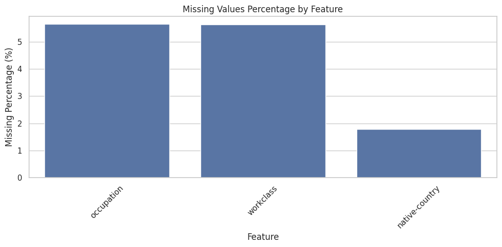
Occupation and workclass each lack about 5.6% of values; native-country is missing less often (1.79%). These categorical fields need an explicit missing-value strategy before modeling.
Age and fnlwgt have longer right tails, while education-num is discrete. Capital gains and losses are concentrated at zero; hours-per-week has a strong peak around 40. Scaling and transformation choices should account for these shapes.
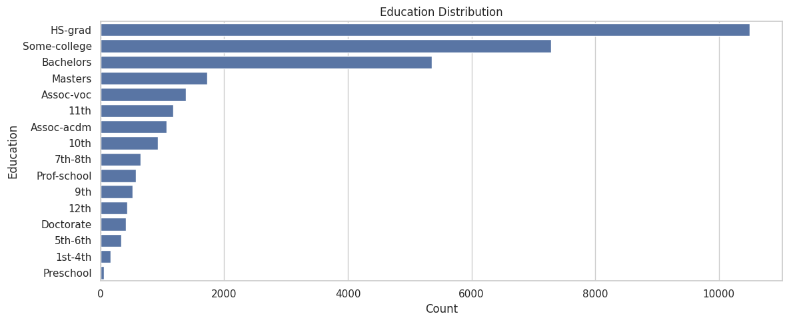
HS-grad is the largest group (10,501), followed by Some-college (7,291) and Bachelors (5,355). The uneven category sizes make within-category rates more useful than counts for comparing income.
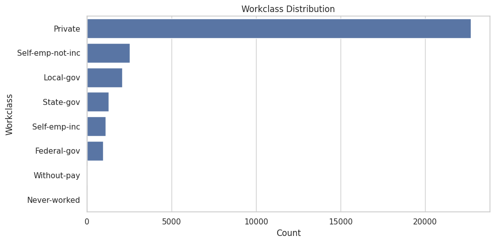
Private employment dominates (22,696 records). Without-pay and Never-worked are rare categories, so model results for those groups may be unstable; missing workclass values are not shown as a separate bar here.
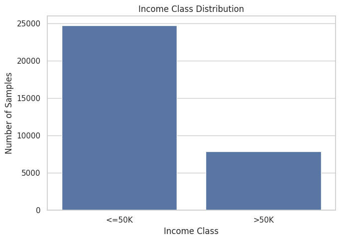
The ≤50K class accounts for 75.92% of records, versus 24.08% for >50K. Use a stratified split and report per-class precision, recall, and F1 rather than relying on accuracy alone.
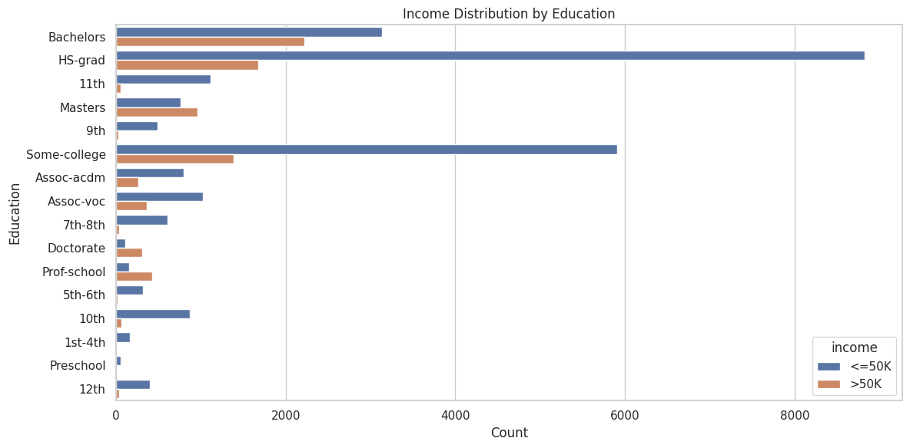
The lower-income bar is longer in most education groups, partly reflecting the overall class imbalance and category sizes. Compare proportions within each education group—not these raw counts—to judge how income mix differs.
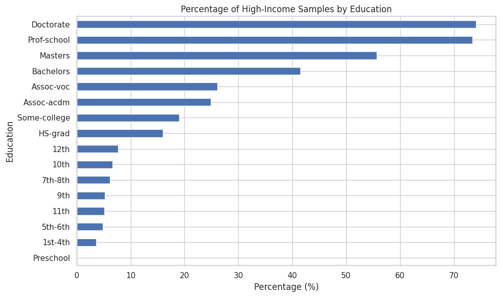
The observed >50K share is highest for Doctorate (74.09%) and Prof-school (73.44%), and is 15.95% for HS-grad. Smaller education groups have fewer observations, and this descriptive association does not establish causation.
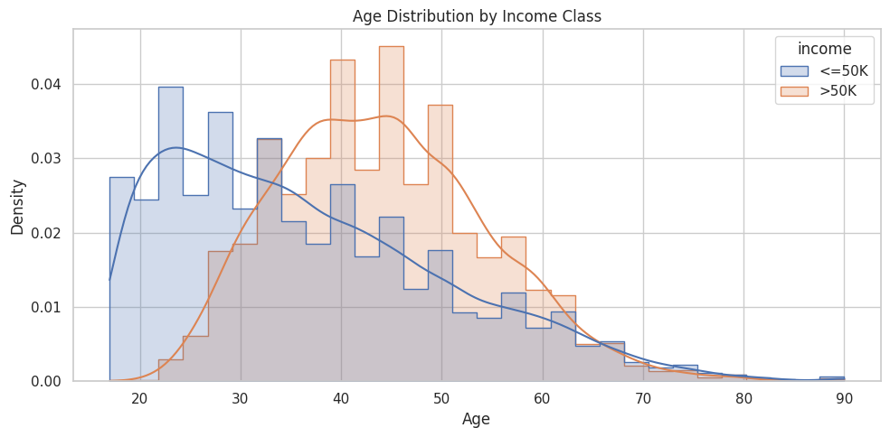
The >50K age distribution is shifted toward older ages, with more density around the 40s; the ≤50K group is more concentrated among younger adults. The distributions overlap substantially, so age alone does not separate the classes.
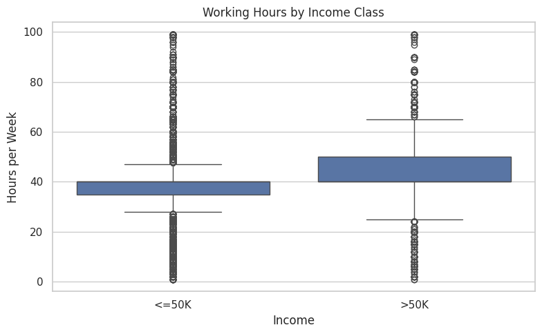
The >50K group has a wider central spread and its upper quartile is higher, while both groups contain unusually low and high reported hours. These are observations to investigate, not automatic reasons to remove records.
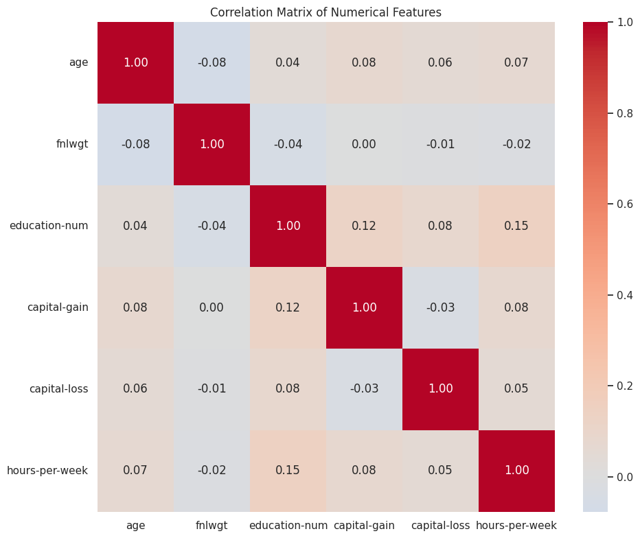
Pairwise Pearson correlations among numeric predictors are weak; the largest off-diagonal value is 0.15 between education-num and hours-per-week. This only captures linear numeric relationships and does not assess categorical predictors or associations with income.
Outlier inspection
Notebook IQR boxplots. Flagged values need contextual review and are not automatically errors.
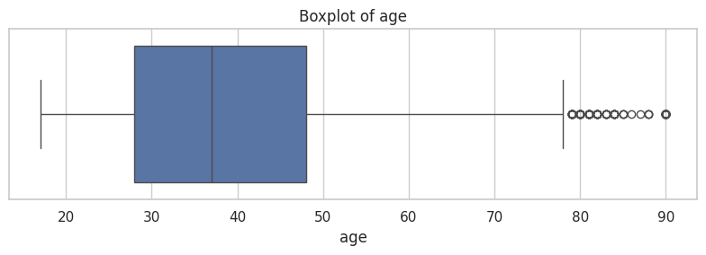
The IQR rule flags 143 ages (0.44%), mostly at the upper end. The observed maximum is 90, which may be unusual but is not inherently invalid; check domain rules before treating these as errors.
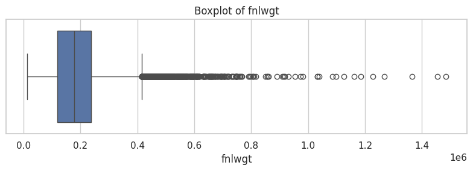
There are 992 flagged values (3.05%) in the long upper tail, extending to 1,484,705. Since fnlwgt is a sampling weight, extreme values need interpretation in context rather than automatic deletion.
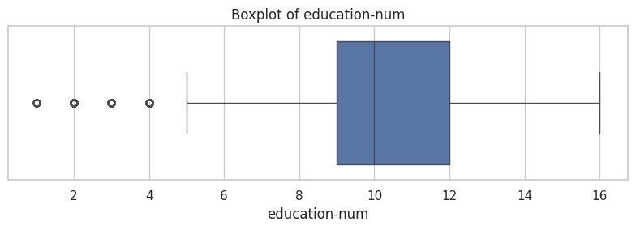
The IQR rule flags 1,198 records (3.68%) at the low end. Education-num is a discrete ordinal code, so these valid lower education levels should not be treated as erroneous continuous-value outliers.
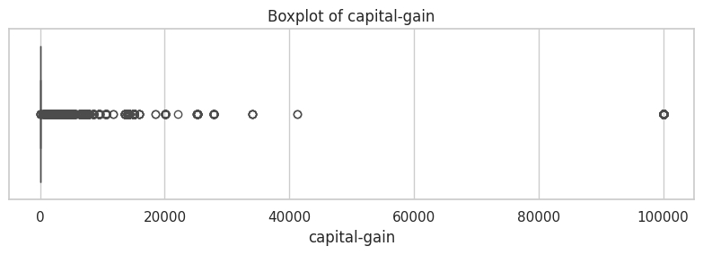
Because both quartiles are zero, the IQR rule flags 2,712 positive values (8.33%) as outliers. This is a zero-inflated distribution; positive gains may be meaningful observations, not data errors.
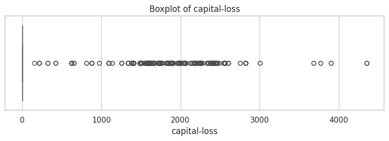
The quartiles are also zero for capital-loss, so 1,519 positive values (4.67%) are flagged. Preserve or transform them based on the modeling objective rather than dropping them solely due to the boxplot.
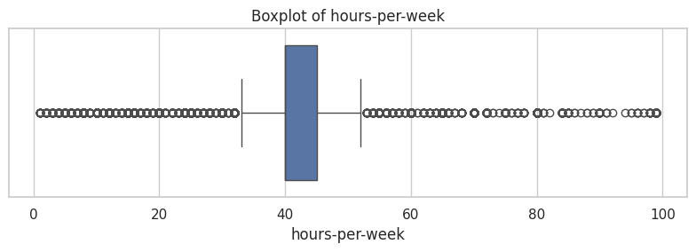
The IQR rule flags 9,008 records (27.66%) outside 32.5–52.5 hours. The large share shows that a mechanical cutoff is too aggressive here; part-time and long-hour work patterns may be valid.
03 / EVALUATION & NEXT STEPS
What to trust — and what not to.
A critical assessment of the current analysis and its readiness for modeling.
Useful first-pass EDA
The notebook establishes the dataset shape and types, quantifies nulls and duplicates, profiles numerical features, and compares the target across education levels. These checks surface class imbalance, incomplete records, and skewed numeric fields before any model is trained.
Cleaning is not finished
Only duplicate rows are removed in the saved workflow. Missing values remain in workclass, occupation, and native-country; a model pipeline still needs explicit imputation or a documented missing-category strategy. Outlier flags should be reviewed, not automatically deleted: zero-inflated capital fields and long-tailed hours can make the IQR rule flag valid observations.
Evaluate beyond accuracy
No trained model or validation metrics are reported in this notebook. For a fair next step, use a stratified train/test split and a majority-class baseline, then report precision, recall, F1, and a confusion matrix for the >50K class. Consider PR-AUC alongside ROC-AUC because the target classes are uneven.
Check features and fairness
education and education-num encode closely related information;
assess their joint use and avoid train/test leakage by fitting preprocessing only on
training data. Since sex and race are present, inspect subgroup error rates and treat
any predictive findings as historical associations, not objective judgments about people.
Scope note: this page summarizes the available EDA outputs. It does not claim model performance, causal effects, or fairness guarantees.